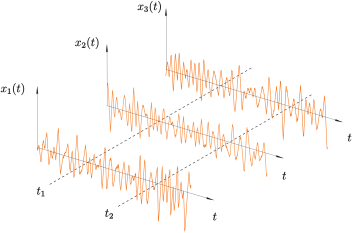

Osnove naključnih procesov¶
Dinamične obremenitve pogosto niso deterministične; primeri naključnih obremenitve so: obremenitve zaradi morskih valov, hrapavost ceste in vibracije zaradi pogonskega motorja. Take obremenitve je treba obravnavati kot naključne procese. V tem poglavju si bomo pogledali kako to naredimo in kako jih potem uspešno uporabimo pri obravnavi dinamskih sistemov.
Naključnih podatkov v nasprotju z determinističnimi podatki ni mogoče natančno predvideti, določene značilnosti pa lahko razberemo z analizo njihovih segmentov; če na primer pomerimo hrapavost segmenta površine, lahko z določeno verjetnostjo sklepamo o značilnostih hrapavosti drugih segmentov. Pri opisu naključnih procesov si pogosto pomagamo s predpostavko naključni porazdelitvi procesa (npr. normalno ali Gaussovo porazdeljen proces).
Medtem, ko bi lahko naključni proces analizirali v časovni domeni, obstajajo pomanjkljivosti za uporabo takega pristopa. Za ustrezno vrednotenje procesa je treba v časovni domeni opraviti dovolj veliko število vzorčnih meritev (ali opazovanj), ki jih nato analiziramo kot skupino (ansambel, ang. ensemble). Kakor bomo videli pozneje, je strukturno dinamiko in naključne procese v frekvenčni domeni bistveno elegantneje analizirati.
Referenčna besedila, ki poglobljeno obravnavajo to temo, ki jih priporočajo bralcu, so Bendat and Piersol [2011], Newland [2012] ter Shin and Hammond [2008]. Nekatere vsebine so povzete po Slavič et al. [2020].
Kaj je naključni proces?¶
Naključni proces je definiran s kombinacijo funkcije gostote verjetnosti (ang. Probability Density Function - PDF) in spektralno gostoto moči (ang. Power Spectral Density - PSD).
Slika spodaj prikazuje ansambel \(\left\{x_k(t)\right\}\) vzorčnih funkcij (opazovanj) \(x_k(t)\), pri čemer je vsako opazovanje \(k\) sestavljeno iz naključne spremenljivke v času \(t_i\): \(x_k(t_i)\). Kot bo obravnavano kasneje, predpostavki o stacionarnosti in ergodičnosti bistveno poenostavijo analizo naključnih podatkov (več pozneje).

Normalna porazdelitev (Gaussov proces)¶
Gaussova porazdelitev je pogosto opažena pri različnih fizikalnih pojavih, njeno razširjenost pa pojasnjuje centralni limitni teorem (glejte Bendat and Piersol [2011]. Na splošno je Gaussov proces tisti, pri katerem verjetnost kombinacije naključnih spremenljivk ob določenih časih \(\left\{x(t_i)\right\}\) sledi večdimenzionalni Gaussovi porazdelitvi. Če pogledamo samo en trenutek v času \(t\), verjetnost amplitude \(x\) ureja normalna funkcija gostote verjetnosti (PDF) \(p(x)\):
Tukaj je \(\mu\) povprečna vrednost, \(\sigma\) je standardni odklon (deviacija) oziroma \(\sigma^2\) varianca. Srednja vrednost \(\mu\) in varianca \(\sigma^2\) določata obliko PDF in se pogosto imenujeta prvi moment in drugi centralni moment; izračunamo ju s pomočjo funkcije gostote verjetnosti:
Primer različnih normalnih porazdelitev prikazuje slika spodaj.
import sympy as sym
σ, μ, x, = sym.symbols('\sigma, \mu, x', real=True)
π = sym.pi
p = 1/(σ*sym.sqrt(2*π)) * sym.exp(-(x-μ)**2/(2*σ**2))
podatki = {σ: 1., μ: 0.}
p1 = sym.plot(p.subs(podatki), (x, -3*σ.subs(podatki), +3*σ.subs(podatki)), line_color='C0',
label=f'$\\mu={μ.subs(podatki):3.2f}, \\sigma={σ.subs(podatki):3.2f}$', show=False,
title='Porazdelitev verjetnosti', ylabel='$p(x)$', xlabel='$x$')
podatki = {σ: 0.5, μ: 0.}
p2 = sym.plot(p.subs(podatki), (x, -5*σ.subs(podatki), +5*σ.subs(podatki)), line_color='C1',
label=f'$\\mu={μ.subs(podatki):3.2f}, \\sigma={σ.subs(podatki):3.2f}$', show=False)
podatki = {σ: 0.5, μ: 0.5}
p3 = sym.plot(p.subs(podatki), (x, -5*σ.subs(podatki), +5*σ.subs(podatki)), line_color='C2',
label=f'$\\mu={μ.subs(podatki):3.2f}, \\sigma={σ.subs(podatki):3.2f}$', show=False)
p1.extend(p2)
p1.extend(p3)
p1.legend = True
p1.show()

S spodnjim izračunom lahko preverimo, da sta prvi moment in drugi centralni moment za Gaussovo/normalno porazdelitev dejansko \(\mu\) in \(\sigma^2\):
import sympy as sym
σ, μ, x, = sym.symbols('\sigma, \mu, x', real=True, positive=True)
π = sym.pi
p = 1/(σ*sym.sqrt(2*π)) * sym.exp(-(x-μ)**2/(2*σ**2))
m1 = sym.integrate(x*p, (x, -sym.oo, +sym.oo))
cm2 = sym.integrate((x-μ)**2 * p, (x, -sym.oo, +sym.oo))
m1
cm2